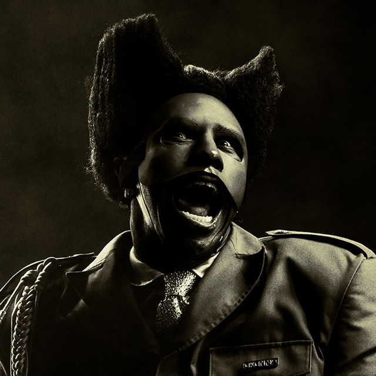
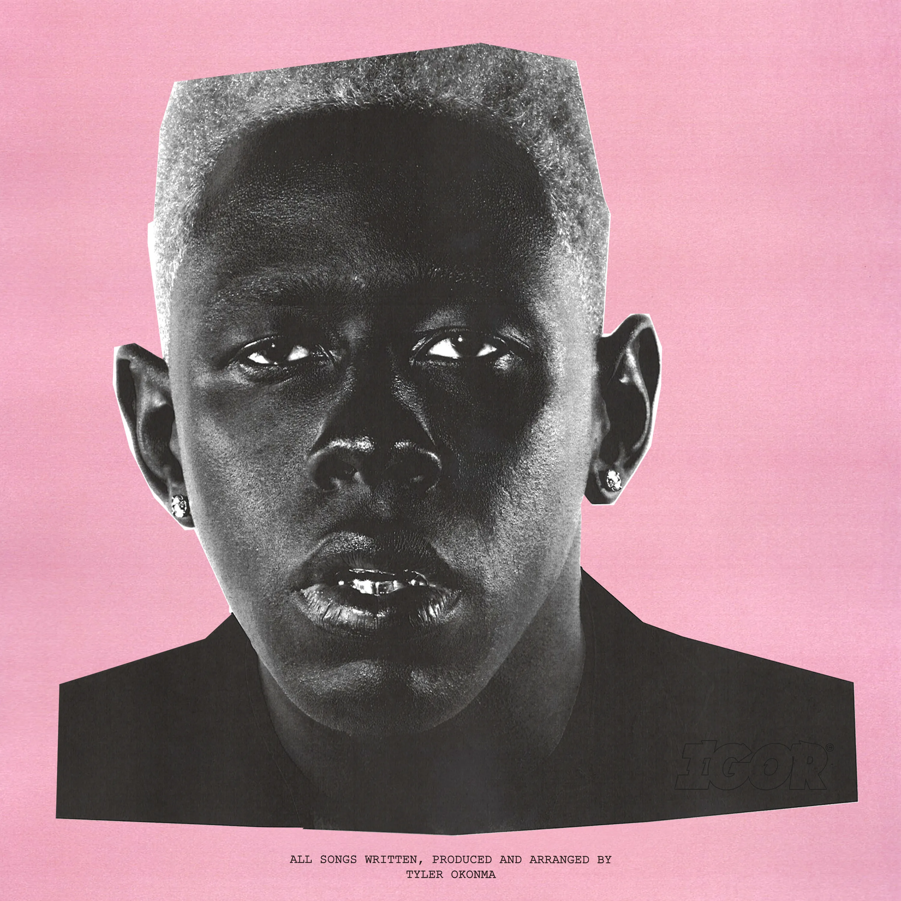
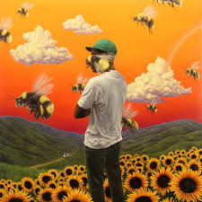

Tyler The Creator

Thought I Was Dead

New Magic Wand

Don't Tap the glass/Tweakin

SWEET/I THOUGHT YOU WANTED TO DANCE

Foreword
Brent Faiyaz
ALL MINE
DEAD MAN WALKING

Rehab (Winter in paris)

WY@

Poison